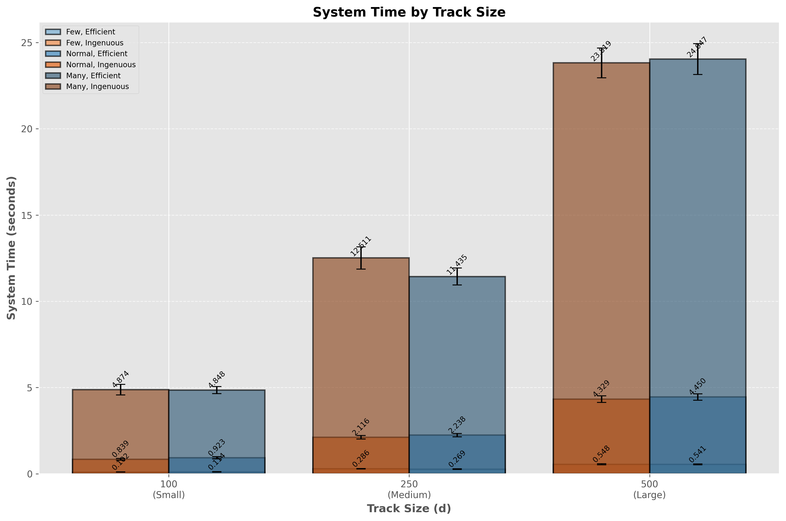
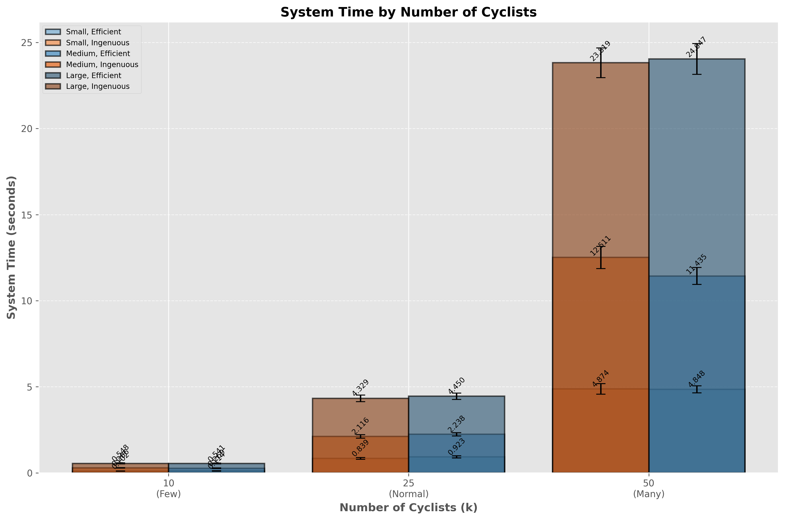

System Time Analysis

Comparison of system time across different track sizes

Comparison of system time across different cyclist counts

Comparison of system time between efficient and ingenuous approaches